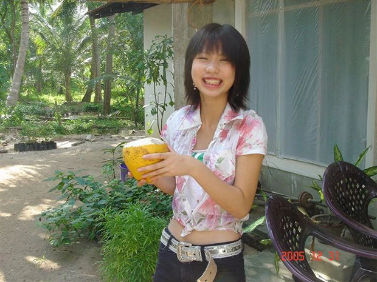
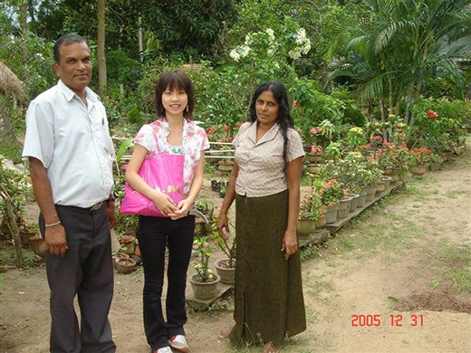
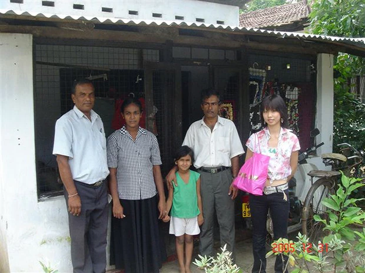
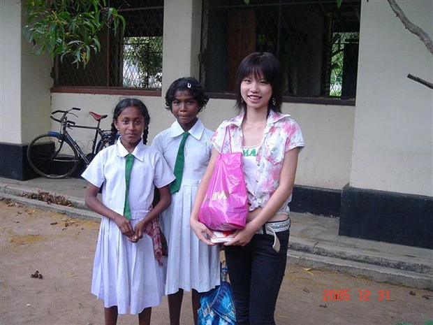

「現地では、日本語が話せる方もおられ、その方が空港まで送迎してくださったり、たまにホームステイ先に電話などもしてくださり、安心して過ごせました。
ただ、私の英語があいまいだったので、もう少し勉強しておいたらホストファミリーの方などと、もっとコミュニケーションがとれたなぁと思いました。
（これは、私の勉強不足です（笑）こんどは、もっと英語力をあげて行きたいと思います★）

私たちは、今の日本・この先進国という裕福な国での生活に慣れています。
しかし発展途上国の現状は日本とは全く違い、私たちが普通にしている勉強なども、現地ではできない子供たちがたくさんいます。スリランカへ行く前、私はこのことをテレビや新聞などから知りました。
私の高校は国際英語科ということもあり、普段から外国の方と接することができます。これが冬休みに入る前で、インターネットで調べていると、このプログラムを見つけました。
発展途上国での生活を体験できる上に、英語まで学べるプログラムだというので、とてもいいチャンスだと思いました。
最初は１人で行くことや治安についてなど、とても不安でしたが、こちらの会社の方にメールでいろいろ相談し親切にいろいろ教えて頂いて、 反対に異なった習慣を体験すること、現地の方と接することが楽しみになり、参加を決めました。
私の英語の先生は、とてもいい先生でした。分かりやすく覚えやすく楽しくレッスンしてくれ、たまに先生の生徒を招いて、コミュニケーションのレッスンもしていただきました。
実際にスリランカでスリランカの生活をして、とてもいい経験だったと思います。
ただ、食べ物が、私にはとても辛く、いいダイエットになりました（笑） 私の日本での生活とは全く違い、こういう生活もいいなぁと思いました。
現地の人に成りきった気分でした（笑） ホストファミリーには同じ年の子もいて、毎日楽しく生活できました。日本に興味のある子がいて、日本語を教えたり、シンハラ語を教えてもらったりしました。
シンハラ語で「アイヨー」という言葉があり、ふざけて使っているうちに、無意識にその言葉がでたり・・・ 日本に帰っても無意識にその言葉が出ていました（笑）
スリランカの人々はとても優しく、ホストファミリーは本当の家族のように接してくれました。 ホストマザーが「あなたは私たちの家族だからね」と言ってくれたことが、とても嬉しく心に残っています。
そしてホストファミリーである１１歳の男の子、私と同じ年の１６歳の女の子、その子たちの従姉弟とも本当の兄弟のように毎日遊びました。皆、とてもいい人たちで、日本の家にいるのと違和感なく過ごせました。
ただ、別れるときがとても辛かったですね・・・。

しかし、実際に行ってみると、こちらの人は皆優しい人たちでした。
町で知らない人と目が合ったらニコッっと微笑んでくれたり・・・。
とても緑がたくさんあるとこで、人々は優しい人ばかりです。
今では、とてもいいイメージしかないですね★
でも、やっぱりスリランカの現状を見て貧相な国だなぁと思いました。
しかし家族はとても温かったですよ。
スリランカへはもちろんまた行ってみたいと思います。ホストファミリーの方などにもまた会いたいと思うし、今度は家族と一緒に行きたいと思います。
私の妹にも、スリランカに行って、何かいろいろ学んでほしいなぁと思います。そして、発展途上国について知ってほしいなぁと思います。今度は、妹にこのプログラムを勧めて、いろいろ学んでほしいですね。
その時は私も一緒に・・・。
やっぱ、英語力をもっと身につけて行きたかったです。
英語でしか、ホストファミリーの方と話すことができないので不十分だと困るなぁと思いました。でも、向こうでも英語のレッスンなどで、十分に身につけることができると思います。
私は学校もあり２週間という短期間だったので、せめて１ヶ月ぐらい滞在したかったなぁと思います。

あと、私のホストファミリーの方が日本の普通の町並みを見たい、雪を見たいと言っていたので、その写真を持っていけばよかったなぁと思います。
そして、スリランカの子供たちは、腕にミサンガ？のようなものをしていたので、作ってプレゼントしたかったなぁと思いました。私は今まで発展途上国に行ったことがなく、今回が初めてでした。
私は、今の時期に行ってよかったなぁと思います。高校生という今の歳だからこそ、尚更学べることもたくさんあり、とても貴重な体験をさせて頂いたと思います。

発展途上国の現状を見て私は将来、国との関係に関わる職業に就けたらいいなぁと思います。
アメリカやカナダなどに語学研修に行くよりも、スリランカのような国で学ぶ方が勉強だけではなく、その他もいろいろ学べることがあると私は思います。
私は、この体験を活かして、学校の課題である論文で、私のこの貴重な体験、そして発展途上国の現状について知ってもらい、実際に行ってほしいということを伝えたいと思います。
ここで、もしかしたら、自分を変えることができるかもしれません。
私が実際にスリランカのことについて現地の方々にいろいろ伺い、勉強に対する熱心さが変わったと思います。勉強したくても、できない子供たちがたくさんいる発展途上国。私は、とても身に沁みました。
こんなに、とても貴重な体験をさせて頂きありがとうございました。」

